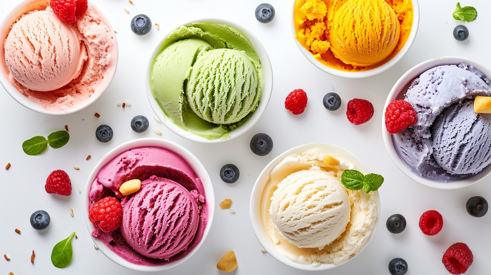

| Plato | Descripción | Precio |
|---|---|---|
|
Patatas bravas
|
Patatas crujientes con salsa brava casera, con un toque de picante que despierta los sentidos. | 6€ |
|
Gambas al ajillo
|
Gambas frescas salteadas en aceite de oliva con ajo y guindilla. Un clásico lleno de sabor. | 8€ |
|
Tabla de quesos
|
Selección de quesos nacionales e internacionales, acompañados de frutas y mermeladas. | 12€ |
| Plato | Descripción | Precio |
|---|---|---|
Tortilla Española
|
Tortilla de patatas jugosa con cebolla caramelizada, perfecta en cada bocado. | 5,50€ |
Paella de mariscos
|
Arroz de paella con mariscos frescos, una especialidad que destaca la riqueza del mar Mediterráneo. | 15€ |
Croquetas de jamon
|
Croquetas cremosas rellenas de jamón ibérico, una opción deliciosa y crujiente. | 7€ |
| Plato | Descripción | Precio |
|---|---|---|
Refrescos
|
Variedad de refrescos de cola, naranja, limón y más, servidos fríos para acompañar tus platos. | 3€ |
Cerveza.jpg)
|
Selección de cervezas nacionales e internacionales, servidas bien frías. | 4,50€ |
Agua
|
Agua mineral natural o con gas, ideal para refrescarte durante tu comida. | 2€ |
| Plato | Descripción | Precio |
|---|---|---|
Tarta de queso
|
Tarta de queso con un toque arandanos y frambuesas, una delicia fresca y suave. | 4,50€ |
Tocinillo de cielo
|
Dulce suave y cremoso a base de yemas de huevo y azúcar, una delicia andaluza. | 4€ |
|
Helado artesanal  |
Helado artesanal con sabores variados según la temporada, siempre fresco. | 3€ |
| Plato | Descripción | Precio |
|---|---|---|
Vino tinto rioja 
|
Vino tinto con cuerpo y notas de frutos rojos, ideal para acompañar carnes y quesos. | 12€ |
Vino blanco albariño
|
Vino blanco fresco con toques afrutados, perfecto para mariscos y pescados. | 10€ |
Vino Rosado Navarra 
|
Vino rosado suave con notas de frutas del bosque, excelente para platos ligeros. | 11€ |